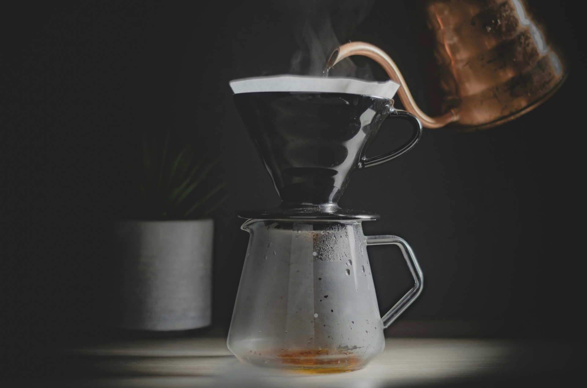
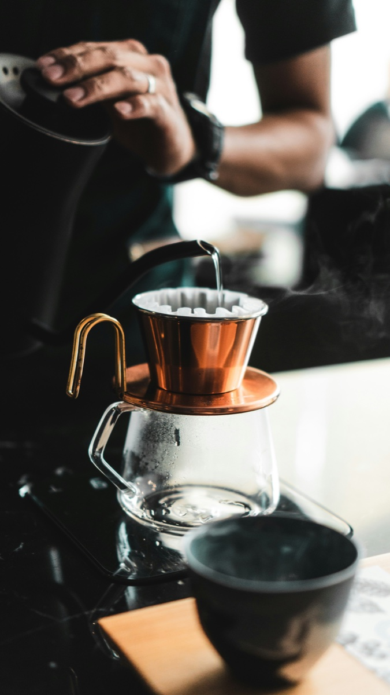
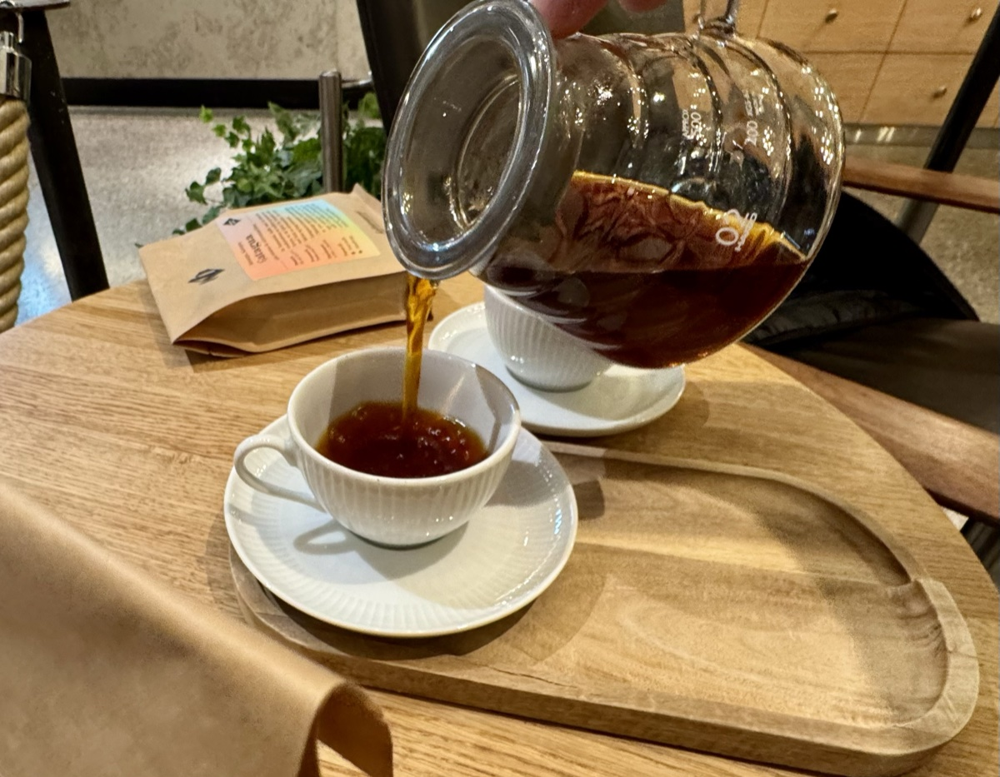

Oslo's world-class coffee scene — four roasters, four neighbourhoods, 22 km
Ask any serious coffee person where the world's best coffee culture is, and Oslo will be in the conversation. Not Milan, not Tokyo, not Melbourne — Oslo. A city of half a million people that has developed an extraordinary relationship with quality coffee, built on an unusually discerning population and a density of craft roasters that most countries ten times its size can't match.
Norway is home to over 80 specialty micro-roasteries — a remarkable number for a small country — and the style they've made their own is the pale, transparent, fruit-forward light roast brewed as filter drip. Where much of the world still associates coffee with dark roast intensity, Oslo's cafés compete on delicacy: the clean acidity of a washed Ethiopian, the floral brightness of a natural Yemeni, all the subtle complexity the bean contains before it's roasted away. Drip coffee here is treated with the same care a sommelier gives wine.
It starts with Tim Wendelboe. In 2004 he won the World Barista Championship. Over the following years he built a roastery in Grünerløkka that became a pilgrimage site for coffee professionals worldwide — where direct-trade relationships, obsessive sourcing and meticulous light-roast technique quietly redefined what coffee could be. He didn't just open a café. He trained a generation.
That generation fanned out across Oslo and beyond. Fuglen in the city centre became an institution — a mid-century-furnished room where the coffee is as considered as the décor, and where branches eventually opened in Tokyo and New York because the world came looking. Supreme Roastworks set up in the Vulkan food hall by the Akerselva river, bringing a roastery aesthetic and seasonal single-origin filter programme to the cup. Java, meanwhile, has been serving specialty coffee in Oslo since 1997 — pre-dating the third wave as a concept — and remains a neighbourhood anchor in St. Hanshaugen.
This tour connects them by bike. We ride through the city's finest coffee neighbourhoods at a pace that lets you take everything in — the murals of Grünerløkka, the river path along Akerselva, the quiet streets of St. Hanshaugen — and we stop properly at each place. Your guide will explain the context, introduce the roasters, and let the coffee speak for itself.


Your guide meets you outside your hotel or apartment at the agreed time. No meeting points to find, no transport to organise. The tour normally ends back at your starting point, or another central location by agreement.
Why Oslo Bike Tours
The tour visits four Oslo specialty coffee institutions: Tim Wendelboe in Grünerløkka (World Barista Champion 2004, and one of the world's most influential roasters), Supreme Roastworks at Vulkan by the Akerselva river, Fuglen in the city centre (mid-century interior, global cult following), and Java in St. Hanshaugen (Oslo's original specialty coffee shop, open since 1997). The exact order follows a logical route through the city.
No. The NOK 1,190 price covers your guide, hotel pickup and the route. Coffee and food at each stop are paid for by you directly — this keeps the tour price honest and lets you order exactly what you want at each place.
Not at all. The tour is as much about cycling through Oslo's best neighbourhoods and sitting down in great spaces as it is about coffee. You will visit four well-regarded places and enjoy a proper stop at each — what you take from it is up to you.
Any bike is suitable — the route is entirely on flat, paved urban roads. If you have your own road or hybrid bike, bring it. If not, e-bike and gravel bike rentals are available from NOK 349. The 22 km distance and relaxed pace also make it one of the few tours where a slower e-bike is just as enjoyable as a road bike.
Yes, easily. At 22 km and 3 hours, the Coffee Tour is the lightest in the programme. It pairs well with the Oslo City Highlights tour in the morning followed by Coffee in the afternoon, or vice versa. Some guests also combine it with the Architecture Tour, which covers similar neighbourhoods from a different angle.
Yes. Tim Wendelboe is the first stop on the tour. His roastery and café in Grünerløkka is the spiritual home of Oslo specialty coffee — the place where, after winning the World Barista Championship in 2004, he built a direct-trade roastery that became a pilgrimage site for coffee professionals worldwide. Your guide will give you the full context before you go in.
Oslo punches far above its weight in global coffee. Norway has over 80 specialty micro-roasteries — a remarkable density for a country of five million — and the style they've pioneered is the pale, fruit-forward light roast brewed as filter drip, treating coffee with the same care a sommelier gives wine. The movement was seeded by Tim Wendelboe and spread through a generation of roasters he trained. Fuglen took it to Tokyo and New York. Supreme Roastworks brought a roastery aesthetic to the Vulkan food district. Java has been doing it quietly and excellently since 1997. Oslo earned its reputation one cup at a time.
Yes — all four cafés on the tour are open to the public during regular hours. All four cafés are open to the public. The value of the tour is the context your guide provides at each stop, the curated route between them through Oslo's best cycling streets, and the hotel pickup that removes any logistics.
Tours are private and guide availability is limited. Send your preferred date and we'll confirm within 24 hours.